La maquette éclairage est le fruit d’un développement commun entre Audi et LD Didactique, ce banc d’expérimentation permet de mener différents tests que ce soit sur le tableau de bord, le système central ou le système électronique. Ce banc met en avant les principes de base de l’électronique des véhicules et des systèmes de bus de données modernes (LIN et Bus CAN). Tout d’abord nous pouvons constater le système d’éclairage, nous avons dans la partie haute les feux de croisement, les feux de route et les clignotants orange, dans la partie basse nous avons les feux de position, de recul, de stop et les clignotants. Au centre on peut remarquer les éléments de contrôle du véhicule c’est-à-dire le volant, le tableau de bord et les commutateurs pour l’éclairage et les butons de réglage des rétroviseurs. Les calculateurs sont montés en façade ceux-ci permettent de gérer les protocoles de communications comme le bus CAN ou le bus LIN.
Dans un véhicule moderne, plusieurs réseaux de communication permettent aux calculateurs d’échanger des informations. Sur ce banc, deux réseaux principaux sont utilisés : le réseau CAN et le réseau LIN. Le réseau CAN est un bus de communication rapide permettant la transmission de données entre plusieurs calculateurs de manière fiable. Le réseau LIN, plus simple et moins coûteux, est utilisé pour les fonctions secondaires nécessitant moins de débit. Les deux réseaux travaillent ensemble afin d’assurer la communication entre les différents systèmes du véhicule. Cette organisation permet de répartir les fonctions selon leur niveau de complexité et de criticité.
Le réseau habitacle, appelé Convenience Electronics, regroupe les fonctions liées au confort et aux équipements du véhicule. Il comprend notamment les systèmes d’éclairage, les commandes du tableau de bord, les essuie-glaces et certains capteurs. Dans cette architecture, un calculateur principal coordonne le fonctionnement global du système. D’autres calculateurs secondaires contrôlent des éléments spécifiques et échangent des informations via le réseau CAN. Certains dispositifs simples peuvent être connectés via le réseau LIN, qui est piloté par un calculateur maître. Cette organisation hiérarchique permet de simplifier la gestion des différents équipements du véhicule.
Le banc d’essai reproduit une architecture simplifiée du réseau habitacle d’un véhicule réel. Plusieurs calculateurs sont reliés entre eux par un bus CAN principal qui permet la communication entre les différents modules. Certains capteurs et actionneurs sont connectés à ces calculateurs afin de simuler le fonctionnement réel des équipements du véhicule. Le système intègre également une interface de diagnostic via la prise OBD permettant d’analyser le réseau avec un ordinateur. Cette architecture permet d’observer les trames de communication et de simuler différents défauts. Le banc constitue ainsi un outil pédagogique pour comprendre le fonctionnement et le diagnostic des réseaux automobiles.
Sert de passerelle intelligente entre le réseau de bord du véhicule (CAN Haute Vitesse ou Basse Vitesse) et le protocole USB d'un PC. Il ne se contente pas de relier les fils, il gère la synchronisation des messages.
Multiprotocole (ISO 15765-4 CAN, ISO 9141-2, KWP2000). Supporte le mode "Dual CAN" pour interroger les différents réseaux de la maquette.
C'est l'outil "clé en main" pour le technicien. Sans lui, aucune communication avec le logiciel VCDS n'est possible pour diagnostiquer les pannes injectées.
Émulateur d'outil de diagnostic constructeur. Il permet de "discuter" avec chaque calculateur individuellement.
Utilisé pour le TP "Eigendiagnose". Vérifie si le calculateur J519 détecte correctement l'appui sur une pédale ou un bouton, et efface les pannes après réparation.
Système d'acquisition de données à haute vitesse, agissant comme un oscilloscope et un multimètre graphique.
Échantillonnage analogique jusqu'à 1 MHz.
Signaux électriques bruts. On y voit la différence de tension entre CAN-High (3.5V en récessif) et CAN-Low (1.5V en dominant) pour le bus propulsion.
Crucial pour visualiser les pannes physiques (Pannes 8, 9, 10 : courts-circuits au + ou à la masse). On voit la forme du signal se déformer ou s'aplatir à l'écran.

Analyseur de protocole réseau pur. Contrairement au VCDS qui pose des questions, cet outil "écoute" tout ce qui se dit sur le bus sans interruption.
CAN 2.0A et 2.0B.
Étude de la logique binaire. Par exemple, voir l'octet 3 du message ID 531h changer de valeur passant de 00 à 01 lorsqu'on active le clignotant.
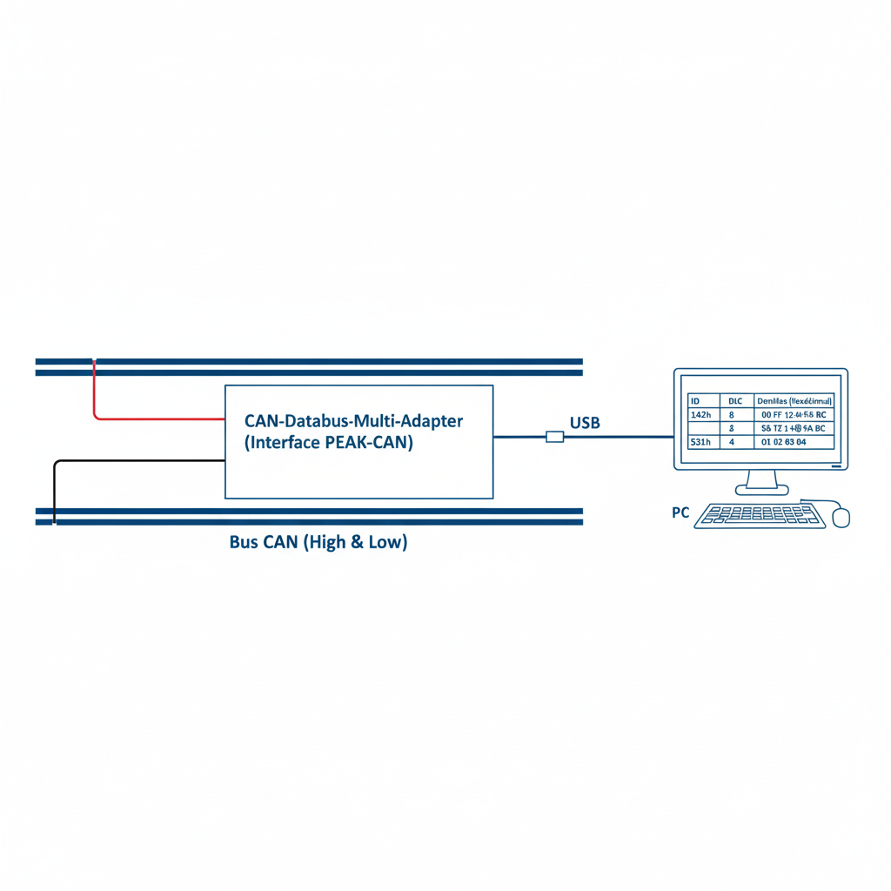
Interface spécifique pour les réseaux secondaires (plus lents et moins chers que le CAN).
Maître/Esclave (Master/Slave). Sur le banc, le J393 est le maître et l'E415 (Neiman) est l'esclave.
Trame de 13 bits (Header) suivie de 1 à 8 octets de données.
Utilisé pour démontrer comment une commande simple (comme l'insertion d'une clé dans le Neiman) est transmise au calculateur principal via un fil unique.

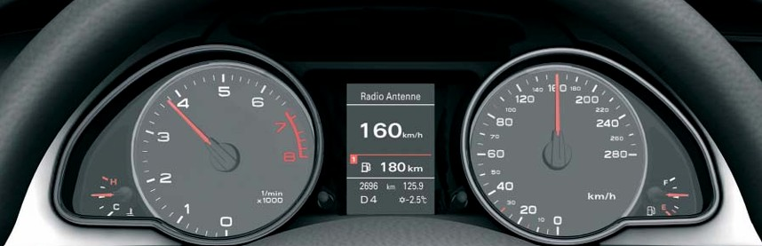
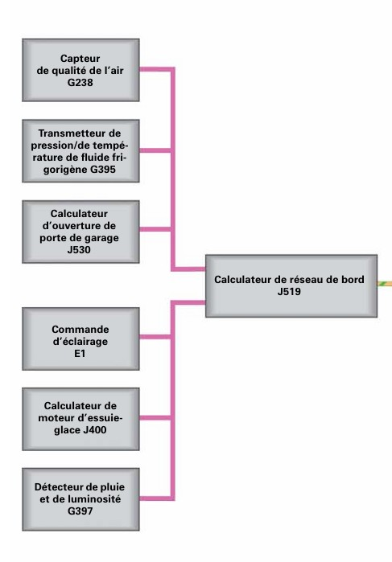
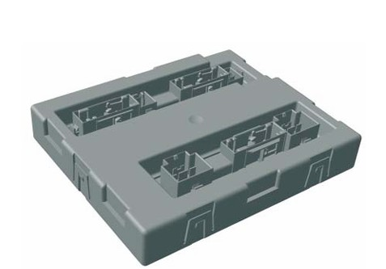
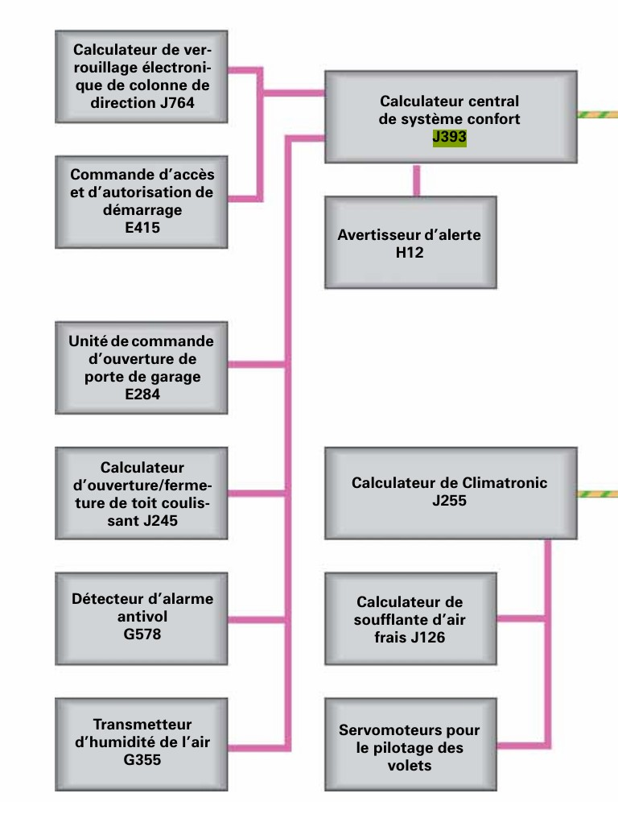
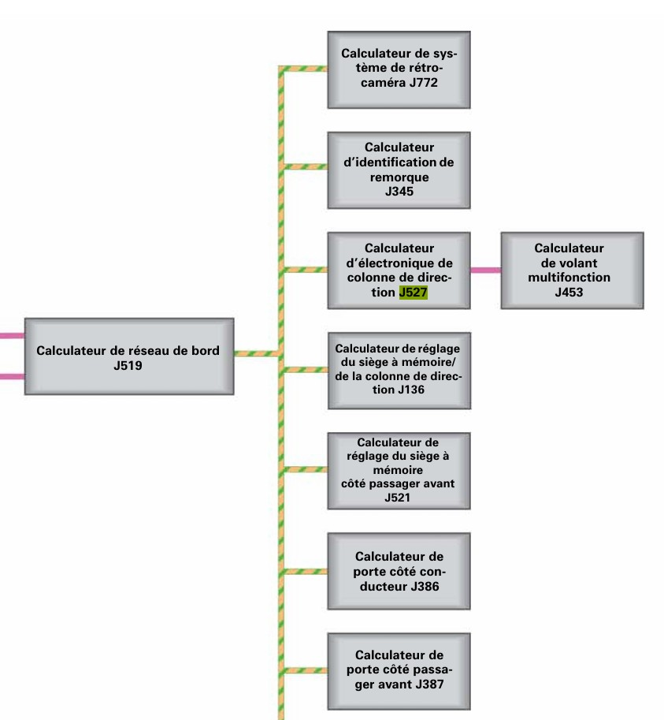
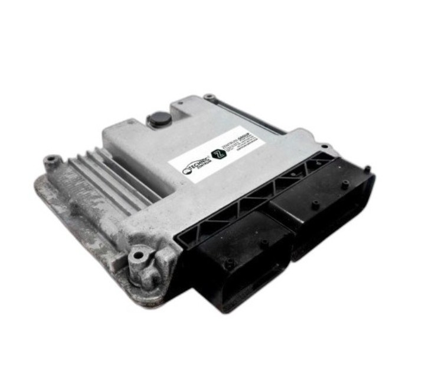
Le J471 est un calculateur beaucoup plus spécifique, il est principalement présent sur les véhicules luxueux du groupe Volkswagen mais aussi sur certains modèles de la plateforme Touareg. Il administre l'interface homme-machine du véhicule, en participant à la communication entre les doigts et les écrans de bord. Il a notamment la charge de :
• La centralisation des commandes en recevant les signaux des boutons de la console centrale.
• L’affichage en pilotant l'envoi des informations vers l'écran central ou le combiné d'instruments.
• La gestion du multimédia, en effet, il fait le pont entre les systèmes audio, la navigation, le téléphone et le réglage des paramètres du véhicule comme les suspensions par exemple.
• La passerelle d'information qui traduit les entrées utilisateur en ordres compréhensibles pour les autres réseaux CAN du véhicule.
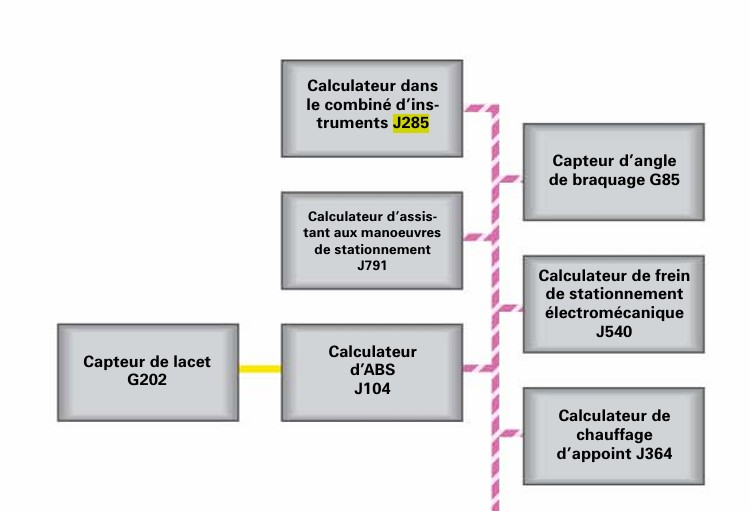
Le J285 est un calculateur qui peut être représenté comme une plaque tournante d'informations sur le véhicule, il a notamment la charge :
• D’afficher des données vitales pour le véhicule comme : la vitesse, le régime moteur, température de liquide de refroidissement ou encore le niveau de carburant.
• De la gestion des voyants en allumant les témoins d'alerte comme l’ABS, les Airbags, l’Huile Moteur, en fonction des messages qu'il reçoit des autres calculateurs via le réseau CAN-Bus.
• De l’ordinateur de bord avec notamment la consommation moyenne, l’autonomie du véhicule, la température extérieure et l’indicateur de maintenance.
• De l’antidémarrage, sur de nombreuses générations ce dernier est installé à l’intérieur du J285. Il permet à la voiture de s’éteindre si cette dernière ne reconnait pas la clé.
Rappel bref mais concis des éléments théoriques CAN: CAN-H/CAN-L, signal différentiel, bit dominant/récessif, arbitrage, trame standard (CAN 2.0A), trame étendue (CAN 2.0B), détection d'erreurs. Faites des illustrations significatives.
Il s'agit d'un bus de données normalisé avec ISO 11898, cellui-ci permet de mettre en application le multiplexage qui consiste à raccorder à un même cable un grand nombre de calculateurs qui communiqueront à tour de rôle. Il 'agit d'un réseau de données utilisant une seule ligne de transmission de données.
Paire de fils torsadés : tous les appareils connectés au bus sont appelés Unités de Contrôle Électronique (ECU) ou de nœuds. Ces CAN permettent la une comunication en utilisant deux fils : CAN HIGH et CAN LOW, ils sont representé par la norme ISO 11898-1 pour la coche de liaison de données et ISO 11898-2 pour la couche physique.
Il s’agit d’une méthode de transmission de signal électrique dans laquelle l’information est la différence entre les signaux transmis sur deux lignes.
Les spécifications CAN utilisent les termes bits dominants et bits récessifs : le bit dominant est à l’état logique 0 (activé par l’émetteur) et le bit récessif est à l’état logique 1 (ramené passivement à l’état bas par une résistance). L’état de repos est représenté par le niveau récessif (1 logique).
Champ d’arbitrage composé de 11 bits d’identification pour CAN 2.0A et 29 bits pour CAN 2.0B suivi par le bit RTR (Remote Transmission Request), ce champ sert d’identification pour la donnée transportée dans le champ de données.
CAN2.0A prend en charge le format de trame standard. La longueur de l'identifiant de ce format est de 11 bits et convient aux scénarios d'application qui ne nécessitent pas un grand nombre de nœuds ou des structures de réseau complexes.
En plus de prendre en charge le format de trame standard, CAN2.0B introduit également le format de trame étendu, dont la longueur d'identifiant est augmentée à 29 bits, ce qui augmente considérablement le nombre de nœuds adressables et la diversité des données dans le réseau, ce qui résout le problème de ressources d'identifiant insuffisantes pouvant exister dans le réseau CAN.
Une trame d’erreur est constituée de deux parties. La première est formée par la superposition des différents ”Error flags” mis par les nœuds du bus. La seconde partie est un délimiteur. Un nœud qui détecte une erreur la signale en envoyant un Error flag. Celui-ci viole la règle du bit stuffing (6 bits dominants consécutifs) et par conséquent, tous les autres nœuds détectent aussi une erreur et commencent à envoyer un Error flag. La séquence de bits dominants qui existe alors sur le bus est le résultat de la superposition de plusieurs Error flags, et sa longueur varie entre 6 et 12 bits. Il existe deux types d’Error flags ensuite nous avons la vérification de la Form Error qui surveille les délimiteurs de trame et finalement il y a l'ACK Error qui lui valide qu'au moins un récepteur a bien acquitté la donnée.
Le système d'éclairage est géré principalement par le Calculateur de réseau de bord (J519) et l'électronique de colonne de direction (J527).
Commande des feux de position, de croisement, de route et des clignotants.
Le commutateur d'éclairage (E1) informe le J519. Le J519 pilote ensuite les feux en filaire ou via CAN pour les modules distants.
Nettoyage du pare-brise selon plusieurs vitesses et intermittence.
Les commandes proviennent du J527 (commodo d'essuie-glace) vers le J519 via le bus CAN Confort.
Le J527 lit la position du levier et envoie l'information au J519, qui pilote le moteur d'essuie-glace.
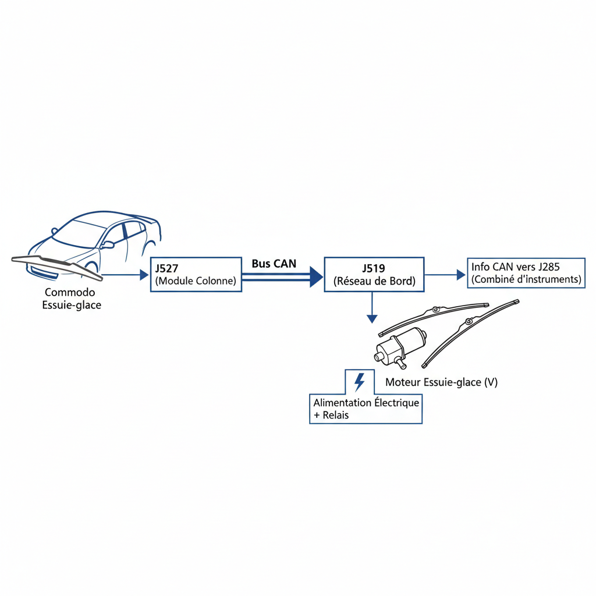
Activer les feux de recul et informer les systèmes d'aide au stationnement.
Le signal de l'interrupteur est généralement lu par le calculateur de boite ou le J519, puis diffusé sur le bus CAN.
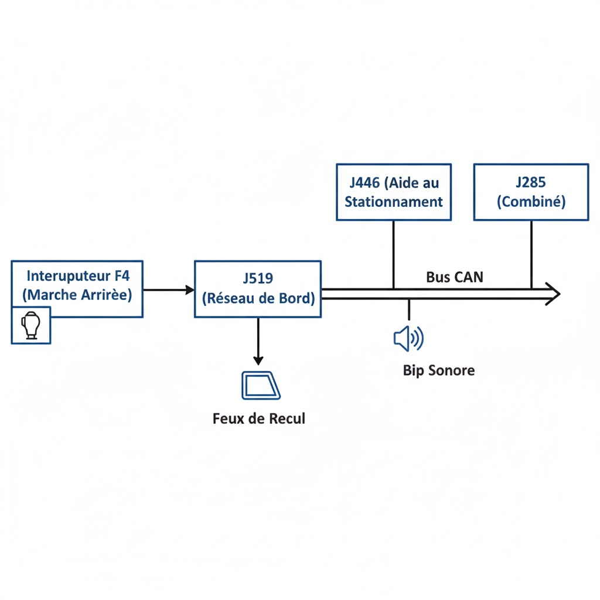
Identification de la clé et autorisation de démarrage.
Le module E415 posséde des microcontacteurs (contact S, clé enfoncée) lus par le Calculateur central de confort (J393).
Le J393 communique avec le J533 (Passerelle) pour transmettre l'état des bornes (15, 50, X) aux autres calculateurs via les bus CAN Propulsion et Confort.
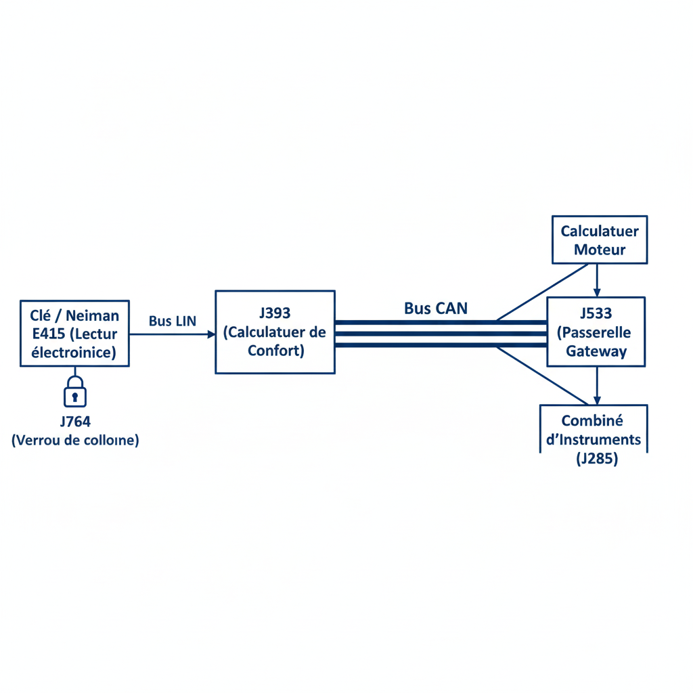
Signalisation d'urgence par clignotement simultané de tous les indicateurs de direction.
L'interrupteur de feux de détresse est relié directement au J519. Le J519 commande ensuite les clignotants et envoie un message sur le bus CAN pour confirmer l'état au combiné d'instruments (J285).
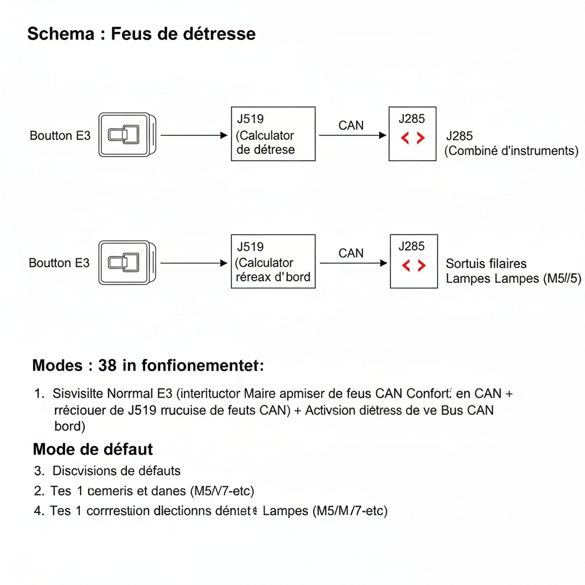
Le diagnostic a été réalisé sur le banc Leybold reproduisant le réseau habitacle d'une Audi A3 de 2007.
La capture CAN a été effectuée avec l'outil PCAN-View et sauvegardée au format .trc, puis en fichier .txt pour réussir a décoder les trames.
Le fichier analysé (Test4) a étét enregistré le 24/02/2026.
L'analyse des trames a été réalisée par un script Python utilisant les bibliothèques
pandas, struct et matplotlib.
L'analyse de la capture révèle les identifiants CAN suivants actifs sur le bus :
| ID CAN (hex) | Occurrences | Calculateur probable | Période (ms) |
|---|---|---|---|
| 0x00C2 | 13 973 | ECU Moteur | ~10 |
| 0x0320 | 6 990 | Calculateur ABS/ESP | ~20 |
| 0x05A0 | 6 987 | Module Volant / Colonne de Direction | ~20 |
| 0x0050 | 6 987 | Tableau de Bord (Instrument Cluster) | ~20 |
| 0x04A8 | 6 986 | Boîte de Vitesses Automatique | ~20 |
| 0x04A0 | 6 986 | Transmission / Différentiel | ~20 |
| 0x01A0 | 6 986 | Module ABS - Capteur Pédale Frein | ~20 |
| 0x05D0 | 1 398 | Module Climatisation / Confort | ~100 |
| 0x0390 | 1 398 | BCM - Body Control Module (J519) | ~100 |
| 0x0572 | 1 395 | Gateway / Passerelle réseau | ~100 |
| 0x0550 | 699 | Module Portes | ~200 |
| 0x0520 | 699 | Module Portes Arrière | ~200 |
| 0x0420 | 699 | Module Sièges / Confort | ~200 |
| 0x05F2 | 279 | Module Diagnostic | ~500 |
| 0x05D2 | 140 | Module Antivol / Immobiliseur | ~1000 |
Observation : Tous les calculateurs émettent des trames de type DT (Data).
Aucune trame de type ER, EC ou ST n'est présente dans ce fichier,
ce qui signifie que les erreurs matérielles ne sont pas remontées explicitement par PCAN-View
dans cette configuration. Les défauts sont donc identifiés par analyse comportementale
(silences, transitions anormales) et non par codes d'erreur directement.
Les zones de forte densité de trames visibles sur les graphiques (zones rouges) ne correspondent pas à une rupture du bus CAN, mais à un défaut d'alimentation du véhicule. Le phénomène observé est un tic de relais : la batterie du banc étant en état limite de charge, le relais principal tente de se réenclencher de façon répétitive. Chaque tentative de réalimentation provoque une micro-coupure puis un redémarrage immédiat des calculateurs, générant une rafale dense de trames sur le bus CAN.
Comportement observé : Sur les graphiques générés (voir Section 7), les zones colorées en rouge représentent ces périodes d'instabilité. Deux événements distincts sont identifiables :
Cause identifiée : Alimentation par le générateur du banc causant un disfocntionnement 12V simulée. Le relais principal oscille entre ouvert et fermé, coupant et rétablissant l'alimentation des calculateurs de manière répétée.
Comportement réseau : À chaque micro-coupure, tous les calculateurs perdent leur alimentation simultanément. Au rétablissement, ils exécutent leur séquence d'initialisation et reprennent leur émission CAN. Ce phénomène est visible comme une "salve" de trames dans PCAN-View : tous les ECU émettent leurs trames de démarrage en même temps, créant une congestion momentanée du bus.
Correction : Remplacer le générateur du banc par une version plus robuste. Vérifier la tension d'alimentation avec un multimètre avant toute capture : elle doit être stable entre 12,0 V et 12,6 V. Un condensateur de filtrage peut également être ajouté sur l'alimentation pour amortir les chutes de tension transitoires.
L'analyse comparée de la trame 0x0390 (BCM, output feux stop) et de la trame 0x01A0 (ABS, capteur pédale physique) révèle une incohérence :
Analyse technique : Ce comportement peut avoir deux origines :
0x40 sur l'octet 4) est partiellement
incorrect pour cette version du BCM (J519) installé sur le banc Leybold.
La valeur 0x40 observée dès la trame initiale (10 00 00 00 00 00 00)
correspond au bit 6 du premier octet, non de l'octet 4.Valeurs observées dans la capture Test4 - trame 0x0390 (début) :
Temps (ms) | Octet 0 | Octet 1 | Octet 2 | Octet 3 | Octet 4 | Octet 5 | Octet 6 ------------|---------|---------|---------|---------|---------|---------|-------- 10.986 | 10 | 00 | 00 | 00 | 00 | 00 | 00 64606.628 | 10 | 00 | 00 | 00 | 00 | 00 | 04 <- Veilleuses ON 109504.649 | 10 | 00 | 00 | 00 | 08 | 00 | 00 <- Cligno Droit 112204.440 | 10 | 00 | 00 | 00 | 04 | 00 | 00 <- Cligno Gauche 114904.179 | 10 | 00 | 00 | 00 | 44 | 00 | 00 <- Feux Stop + Cligno G 115504.315 | 10 | 00 | 00 | 00 | 40 | 00 | 00 <- Feux Stop seuls
| Défaut | Cause | Comportement observé | Correction |
|---|---|---|---|
| Tic de relais (batterie faible) | Alimentation 12V instable | Rafales de trames denses, redémarrages calculateurs répétés | Remplacer la batterie, vérifier tension 12V |
| ECU absent (simulé) | Retrait d'un calculateur | Absence des trames de l'ECU concerné | Reprise à la reconnexion de l'ECU |
| Incohérence pédale/stop | État initial BCM ou décodage | Feux stop ON sans appui pédale | Vérifier masque 0x40 sur octet 0 |
Sur le banc Leybold (Audi A3), le système d'éclairage est géré centralement par le BCM (Body Control Module, calculateur J519). Ce calculateur reçoit les commandes (interrupteurs, pédale) et pilote les actionneurs (ampoules). Toutes les informations d'état de l'éclairage sont diffusées sur le bus CAN via la trame 0x0390 avec une période d'environ 100 ms.
Structure de décodage de la trame 0x0390 (DLC = 8 octets) :
| Octet | Bit(s) | Signal | Valeur 0 | Valeur 1 |
|---|---|---|---|---|
| 4 | bit 2 (0x04) | Clignotant Gauche | Éteint | Allumé |
| 4 | bit 3 (0x08) | Clignotant Droit | Éteint | Allumé |
| 4 | bits 2+3 (0x0C) | Warning (Feux de Détresse) | Éteint | Allumé (les deux clignotants) |
| 4 | bit 6 (0x40) | Feux Stop (Output BCM) | Éteint | Allumé |
| 3 | bit 4 (0x10) | Feu de Recul (Marche Arrière) | Éteint | Allumé |
| 6 | bits 4+5 (0x30) / bit 2 (0x04) | Veilleuses / Feux de Croisement | Éteint | Allumé |
| 6 | bits 0+2 (0x05) / bit 1 (0x02) | Antibrouillards | Éteint | Allumé |
Les feux stop sont commandés par le BCM (J519) en réponse au signal de pédale de frein reçu du module ABS via la trame 0x01A0 (bit 3 de l'octet 1).
Séquence de fonctionnement normale :
Pedale_Frein = 1).Trame normale (feux stop éteints) :
0x0390 : 10 00 00 00 00 00 00 00 (octet 4 = 0x00)
Trame avec feux stop allumés :
0x0390 : 10 00 00 00 40 00 00 00 (octet 4 = 0x40, bit 6 = 1)
Trame en défaut (incohérence détectée dans Test4) :
0x0390 : 10 00 00 00 40 00 00 00 dès t=0ms, sans appui pédale détecté par ABS -> Le capteur pédale (0x01A0) reste à 0 tout au long de la capture. -> Cause probable : état initial BCM ou décalage de l'octet de référence.
Voir graphique : graph_04_freinage_comparatif.png
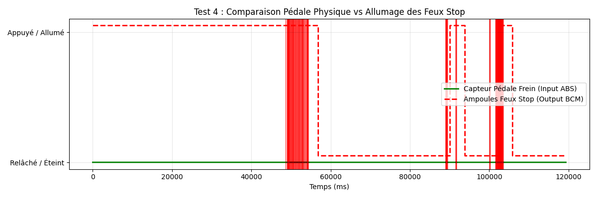
Les clignotants gauche et droit sont codés dans l'octet 4 de la trame 0x0390. Le clignotant droit correspond au bit 3 (masque 0x08), le gauche au bit 2 (masque 0x04). Lorsque les deux bits sont actifs simultanément (0x0C), le BCM interprète cela comme une activation des feux de détresse (Warning).
Timeline observée dans Test4 :
Trame normale clignotant droit :
0x0390 : 10 00 00 00 08 00 00 00 (octet 4 = 0x08)
Trame normale clignotant gauche :
0x0390 : 10 00 00 00 04 00 00 00 (octet 4 = 0x04)
Trame Warning (feux de détresse) :
0x0390 : 10 00 00 00 0C 00 00 00 (octet 4 = 0x0C, bits 2 et 3 = 1)
Voir graphique : graph_02_direction.png
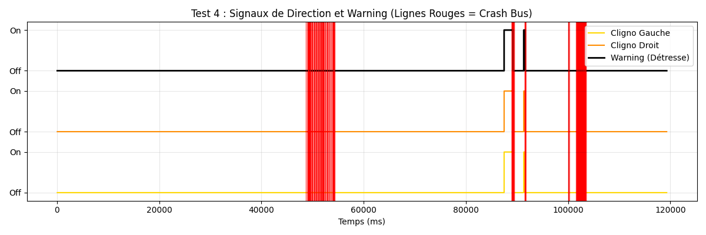
L'éclairage avant (veilleuses et feux de croisement) est codé dans l'octet 6 de la trame 0x0390. Le bit 2 (masque 0x04) indique l'activation des veilleuses ou feux de croisement.
Timeline observée dans Test4 :
Trame normale veilleuses activées :
0x0390 : 10 00 00 00 00 00 04 00 (octet 6 = 0x04)
Trame éclairage éteint :
0x0390 : 10 00 00 00 00 00 00 00 (octet 6 = 0x00)
Voir graphique : graph_01_eclairage_principal.png
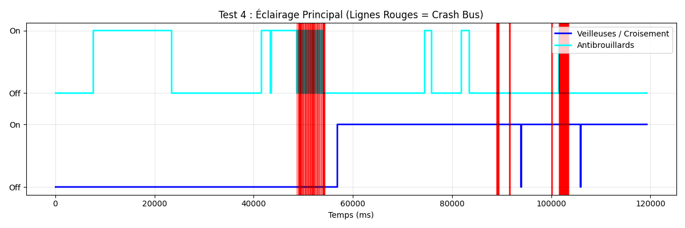
Les antibrouillards sont également codés dans l'octet 6 de la trame 0x0390. Le bit 1 (masque 0x02) correspond aux antibrouillards arrière, et les bits 0+2 (masque 0x05) aux antibrouillards avant. Une valeur de 0x06 indique l'activation simultanée des veilleuses et antibrouillards.
Séquences de clignotement observées (t = 67 100 à 69 800 ms) : Le BCM alterne entre 0x04 (veilleuses seules) et 0x06 (veilleuses + antibrouillards) environ toutes les 200 ms, ce qui correspond à la fréquence de clignotement standard d'un feu antibrouillard en mode pulsé lors de l'activation.
Trame antibrouillard seul :
0x0390 : 10 00 00 00 00 00 02 00 (octet 6 = 0x02)
Trame veilleuses + antibrouillard :
0x0390 : 10 00 00 00 00 00 06 00 (octet 6 = 0x06)
Le feu de recul est codé dans l'octet 3 de la trame 0x0390 (bit 4, masque 0x10). Il s'active lorsque la boîte de vitesses passe en position "R" (Reverse). L'information de position de la boîte est transmise via la trame 0x04A8 et le BCM (J519) active en conséquence le feu de recul.
Trame normale (marche avant ou point mort) :
0x0390 : 10 00 00 00 00 00 00 00 (octet 3 = 0x00)
Trame marche arrière engagée :
0x0390 : 10 00 00 10 00 00 00 00 (octet 3 = 0x10, bit 4 = 1)
Note : Dans la capture Test4, aucune activation du feu de recul n'a été détectée (octet 3 reste à 0x00 sur toute la durée). L'événement visible sur le graphique 3 correspond à la capture Test4 (fichier séparé).Cela est du au faites que nous n'avons pas
accès au controle de commande de la boite de vitesse , ce qui nous empeche de passer en mode Reverse.Voir graphique : graph_03_marche_arriere.png

| Fonction | ID CAN | Octet | Masque | Trame type ON | Observé dans Test4 |
|---|---|---|---|---|---|
| Veilleuses / Croisement | 0x0390 | 6 | 0x04 | ...04 00 | Oui - t=64 606ms |
| Antibrouillards | 0x0390 | 6 | 0x02 / 0x05 | ...02 00 / ...06 00 | Oui - t=70 006ms |
| Clignotant Gauche | 0x0390 | 4 | 0x04 | ...04... 00 00 | Oui - t=112 204ms |
| Clignotant Droit | 0x0390 | 4 | 0x08 | ...08... 00 00 | Oui - t=109 504ms |
| Warning (Détresse) | 0x0390 | 4 | 0x0C | ...0C... 00 00 | Non détecté dans Test4 |
| Feux Stop | 0x0390 | 4 | 0x40 | ...40... 00 00 | Oui - t=115 504ms |
| Feu de Recul | 0x0390 | 3 | 0x10 | ...10 00... 00 00 | Non (voir Test4) |
| Pédale Frein (physique) | 0x01A0 | 1 | 0x08 | octet1 bit3 = 1 | Non détecté |
Tension nominale : 12V DC (alimentation batterie simulée). Courant de repos : à vérifier selon la charge connectée.
TestX.trc.Procédure de test séquentiel des fonctions éclairage :
Pour simuler les défauts décrits en Section 6 :